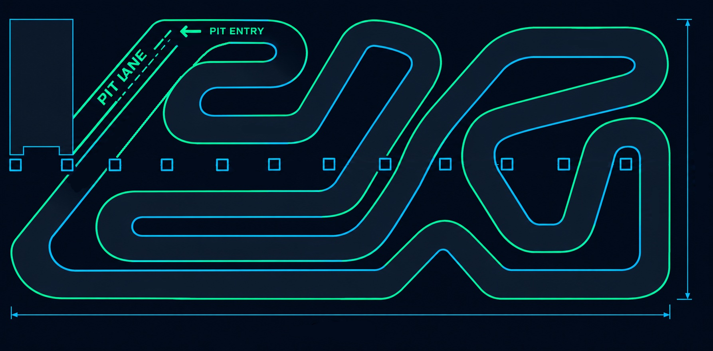

465 метров.
От 3 до 5 метров.
19 поворотов, есть шпильки и шикана.
38.177 секунды.
После старта пилоты идут по длинной прямой и заходят в первый быстрый поворот. Здесь важно выбрать правильную траекторию и не потерять скорость на выходе.
Извилистая часть трассы проверяет точность пилотирования. Перед финишной прямой находится узкая петля, где удобнее всего атаковать соперника.
Выберите заезд в прайсе или свяжитесь с нами, и мы подберем удобное время.
Записаться